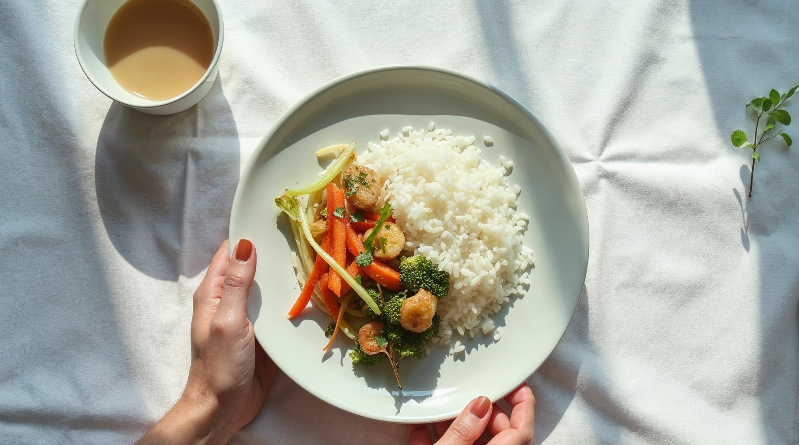

이종호 한의사 감수좋은꿈참사랑한의원 대표원장 (한의사 면허번호 19769)발행 2026-11-22 · 수정 2026-11-26
이 글의 차례
새벽 두 시쯤, 자다가 목이 화끈해서 눈을 뜹니다. 입안에 시큼한 맛이 돌고, 명치부터 가슴 한가운데까지 뭔가 타는 것 같습니다. 일어나 물을 한 잔 마시고 베개를 두 개 겹쳐 다시 누워 봐도 쉽게 잠이 오지 않습니다. 아침이 되면 목이 칼칼하고 목소리가 잠겨 있지요. 진료실에서 이런 말씀을 자주 듣습니다. "원장님, 밤마다 이러니까 자는 게 무서워요."
식사 뒤 명치가 타는 듯하고 신물이 목까지 올라오는 일이 두 주 넘게 반복된다면, 저는 먼저 경고 증상이 없는지부터 확인하고 그다음에 식사 시간, 눕는 시각, 자세 같은 생활을 함께 살펴보시라고 말씀드립니다. 위산이 식도 쪽으로 거슬러 올라오는 것과 관련된 경우가 많지만, 비슷한 증상 뒤에 다른 원인이 숨어 있을 수 있기 때문입니다.
검은 변, 음식이 잘 넘어가지 않는 삼킴 곤란, 이유 없는 체중 감소 가운데 하나라도 있다면 한의원보다 내과 확인이 먼저입니다. 피를 토했을 때, 그리고 가슴 통증이 걷거나 계단을 오를 때 생기거나 숨참·식은땀과 함께 온다면 가까운 응급실로 가셔야 합니다.
약을 먹으면 가라앉는데, 또 올라옵니다
속쓰림으로 오시는 분들 이야기를 들어 보면 비슷한 길을 지나오신 경우가 많습니다. 처음에는 가끔 그러다 말겠지 하고 넘깁니다. 그러다 잦아지면 약국에서 제산제를 사 드시고, 병원에서 위산을 줄이는 약을 처방받습니다. 약을 먹는 동안은 좀 가라앉습니다. 그런데 약을 멈추면 다시 올라오고, 회식 한 번, 야식 한 번에 금세 원래대로 돌아갑니다.
"평생 이렇게 약을 먹어야 하나요?" 이 질문에는 걱정과 지침이 함께 묻어 있습니다. 밤잠을 설치고, 좋아하던 커피를 조심하고, 저녁 약속이 부담스러워지고. 속쓰림은 단지 가슴이 쓰린 일로 끝나지 않고 하루의 결을 바꿔 놓습니다. 그 시간을 지나오신 분들께 저는 먼저 그동안 참 애쓰셨다는 말씀을 드리고 싶습니다.
드시는 약은 처방한 의사와 상의 없이 줄이거나 끊지 마세요. 약국에서 산 위장약으로 두 주 넘게 버티고 계셨다면, 혼자 계속 드시기보다 내과에서 원인을 확인해 보시길 권합니다.
약을 드시는 동안에도 함께 돌아볼 수 있는 것이 있습니다. 언제 먹는지, 먹고 얼마 뒤에 눕는지, 잠은 어떤지, 요즘 어떤 일로 마음이 쓰이는지. 저는 그 이야기들 사이에서 실마리를 찾는 편입니다.
왜 위산이 거꾸로 올라올까요
위와 식도 사이에는 문처럼 조여 주는 부분이 있습니다. 음식이 내려갈 때는 열리고, 내려간 뒤에는 닫혀서 위 안의 내용물이 다시 올라오지 않도록 막아 줍니다. 이 부분이 느슨해지거나, 위 안이 너무 꽉 차서 압력이 높아지면 위산이 식도 쪽으로 올라오기 쉬워집니다.
자세도 큰 몫을 합니다. 배부르게 먹고 바로 누우면 위와 식도가 거의 같은 높이가 됩니다. 늦은 야식 뒤에 곧장 잠자리에 드는 날 새벽에 신물이 올라오는 이유가 여기 있습니다. 허리를 깊이 숙이는 일, 배를 꽉 조이는 벨트나 옷도 위를 누릅니다.
음식과 기호품으로는 기름진 음식, 커피, 술, 흡연이 이런 불편을 키우는 요인으로 알려져 있습니다. 복부 비만이 있으면 배 안의 압력이 높아져 영향을 받을 수 있습니다. 진통소염제나 아스피린을 자주 드시는 분은 속쓰림이 약과 관련이 있는지도 처방한 의사와 함께 확인해 보셔야 합니다.
그리고 제가 진료실에서 꼭 여쭙는 것, 스트레스와 잠입니다. 마음이 바쁜 주, 잠이 짧은 주에 증상이 더 심하다는 분이 정말 많습니다. 실제로 위산이 더 많이 나오는지와 별개로, 지치고 긴장한 몸은 같은 자극도 더 아프게 느끼곤 합니다. 그래서 저는 속쓰림을 이야기할 때 잠과 마음을 같이 이야기합니다.
속쓰림, 다 같은 속쓰림이 아닙니다
같은 "속이 쓰려요"라도 언제 쓰린지에 따라 살펴볼 방향이 달라집니다. 저는 이 질문을 가장 먼저 드립니다. 하루 중 언제 가장 심하세요?
식사 뒤 삼십 분에서 두 시간 사이에 가슴이 타고 신물이 올라온다면 역류와 관련된 경우가 많습니다. 누웠을 때, 허리를 숙일 때 심해진다면 더 그렇습니다. 반면 배가 고플 때 쓰리고 밥을 먹으면 잠깐 나아진다면, 저는 먼저 내과 검사가 필요한지 확인해 보시라고 권합니다.
목에 뭔가 걸린 것 같은 느낌, 헛기침, 쉰 목소리가 아침마다 반복된다면 위산이 목 근처까지 올라오는 경우도 생각해 봅니다.
속쓰림보다 배가 꽉 차고 묵직한 느낌이 더 크다면 조금 다른 이야기입니다. 그런 분께는 식사 뒤 속이 더부룩할 때 글을 함께 권해 드립니다. 두 가지가 같이 있는 분도 많습니다.
마음이 바쁜 날, 속도 같이 바빠집니다
이 이야기는 따로 한 번 더 드리고 싶습니다. 속쓰림으로 오신 분께 "요즘 마음 쓰이는 일이 있으세요?" 하고 여쭈면 잠깐 말이 없으시다가 이야기를 꺼내시는 경우가 있습니다. 회사 일이 몰렸다거나, 집안에 아픈 가족이 있다거나, 이사와 시험이 겹쳤다거나요. 그 이야기를 듣고 나면 저는 지난 몇 주간 그분의 위가 어떤 시간을 보냈을지 조금 그려집니다.
긴장이 이어지면 밥을 급하게 먹게 되고, 잠자리에 드는 시각이 늦어지고, 커피와 야식이 늘어납니다. 그러니 마음의 무게는 따로 떨어진 이야기가 아니라 식사와 잠을 통해 속쓰림과 이어집니다. 마음을 당장 가볍게 하기는 어렵지요. 그래도 그 사정을 알고 나면, 이번 주에는 무엇부터 덜어 볼지 훨씬 현실적으로 함께 정할 수 있습니다.
진료실에서 자주 뵙는 모습들
어느 한 분의 이야기가 아니라, 진료실에서 자주 마주치는 모습들을 그려 보겠습니다. 혹시 본인의 하루와 닮은 곳이 있는지 보세요.
회식이 잦은 직장인들이 많습니다. 밤 열 시가 넘어 귀가해 씻고 바로 눕습니다. 술과 기름진 안주가 들어간 날이면 새벽에 꼭 깬다고 하십니다. 이런 분들께는 저녁 식사가 끝난 시각과 잠든 시각 사이가 몇 시간인지부터 적어 보시자고 합니다. 대개 한 시간이 채 안 됩니다.
밤늦게 공부하는 수험생도 있습니다. 졸음을 쫓으려고 커피를 마시고, 출출하면 컵라면이나 과자를 먹고, 새벽에 잠듭니다. 아침에 목이 따갑고 입맛이 없다고 합니다. 새벽에 신물이 올라온 날과 야식을 먹은 날이 겹치는지 함께 봅니다. 시험이라는 긴장까지 얹혀 있으니, 아이 입장에서는 몸이 하나 더 있었으면 싶을 겁니다.
관절이 아파 진통소염제를 자주 드시는 어르신들도 계십니다. 속쓰림이 약을 드신 뒤와 관련이 있는지 확인하고, 약에 대해서는 처방한 의사와 상의하시도록 안내합니다. 어르신께 새로 생긴 속쓰림이 점점 심해진다면 검사를 먼저 받아 보시도록 권합니다.
아이를 재우고 나서야 하루 첫 끼다운 끼니를 드시는 분들도 있습니다. 밤 아홉 시, 열 시에 허겁지겁 먹고 곧 누우십니다. 그 하루가 얼마나 숨 가빴을지 저는 짐작만 할 뿐입니다. 이런 분께 "저녁을 일찍 드세요"라는 말은 쉽게 나오지 않습니다. 대신 지금 하루 안에서 바꿀 수 있는 작은 것을 함께 찾아봅니다.
흔히 하는 오해 몇 가지
속쓰림은 위산이 많아서라고만 여기기 쉽습니다. 실제로는 식사 시간, 자세, 과식, 긴장처럼 여러 가지가 겹쳐 생기는 경우가 많습니다.
우유를 마시면 속이 편해진다는 분도 계십니다. 잠깐 가라앉는 듯해도 시간이 지나 다시 불편해지는 분이 있어서, 저는 우유에만 기대지 마시라고 말씀드립니다.
가슴이 타는 느낌은 다 위 때문이라고 생각하기 쉽습니다. 그런데 걷거나 계단을 오를 때 가슴이 조이듯 아프거나, 숨이 차고 식은땀이 나거나, 왼쪽 팔이나 턱으로 통증이 퍼진다면 심장 문제일 수 있습니다. 이때는 망설이지 말고 가까운 응급실로 가셔야 합니다.

일상에서 먼저 해 볼 수 있는 것
여러 가지를 한꺼번에 바꾸려 하면 오래 못 갑니다. 저는 아래 가운데 지금 가장 쉬워 보이는 것 하나부터 시작해 보시라고 권합니다.
가장 먼저 권하는 것은 식사와 잠 사이의 간격입니다. 저녁은 잠들기 세 시간 전까지 마치고, 식사 뒤 두세 시간은 눕지 않는 것을 목표로 해 보세요. 밤 열두 시에 잠드신다면 저녁은 아홉 시 전에 끝내는 셈입니다. 처음부터 어렵다면 삼십 분씩 앞당겨 보셔도 됩니다.
하루를 시간 순서로 정리해 보면 이렇습니다.
- 아침: 빈속에 커피를 마시기보다 먼저 가볍게 먹기
- 점심: 천천히 먹고, 식후에는 바로 엎드리지 말고 십 분쯤 걷기
- 저녁: 과식과 기름진 음식, 술을 줄이고 잠들기 세 시간 전에 마치기
- 밤: 불편하면 베개만 높이기보다 상체 전체를 약간 높여 눕기
식후에 허리를 조이는 벨트나 옷은 조금 느슨하게 해 두세요. 흡연을 하신다면 줄이거나 끊는 쪽을 생각해 보시면 좋겠습니다. 어떤 음식 뒤에 불편했는지 일주일만 적어 보시면 본인에게 유독 부담스러운 것이 보이기도 합니다. 누구에게는 커피, 누구에게는 매운 국물, 누구에게는 늦은 과일입니다.
잠도 챙겨 주세요. 잠이 짧은 주에 속쓰림이 더 예민해지는 분이라면, 소화를 위해서라도 잠자리에 드는 시각을 먼저 지켜 보시길 바랍니다. 마음이 무거운 일이 있다면 그것도 진료 때 이야기해 주세요. 속쓰림과 상관없어 보여도 저에게는 쓸모 있는 이야기입니다.
얼마나 지켜보고, 언제 검사받으면 좋을까요
과식이나 술 뒤 하루 이틀 쓰린 정도라면 식사 시간과 자세를 바꾸며 한두 주 지켜보셔도 됩니다.
생활을 바꿔도 두 주 넘게 반복되거나 점점 잦아진다면 내과 진료로 원인을 확인하시길 권합니다. 오래 참는 것이 능사는 아닙니다.
검은 변, 삼킴 곤란, 이유 없는 체중 감소가 있다면 기다리지 마시고 바로 내과에서 확인하세요. 피를 토했다면 가까운 응급실로 가셔야 합니다. 이 대목은 제가 겁을 드리려는 것이 아니라, 놓치지 않으셨으면 하는 마음으로 드리는 말씀입니다.
처음 오시면 이렇게 진료합니다
좋은꿈참사랑한의원에 처음 오시면 저는 먼저 증상이 언제, 어떤 음식과 자세에서 심해지는지 충분히 듣고, 경고 증상이 없는지부터 확인합니다.
그다음 이것저것 여쭙습니다. 식사 뒤 얼마 만에 눕는지, 몇 주 전부터 이어졌는지, 목에 걸린 느낌이나 쉰 목소리가 있는지, 잠은 몇 시에 들고 새벽에 깨는지, 대변은 편한지, 손발과 배가 찬 편인지, 요즘 마음 쓸 일이 많은지.
속쓰림으로 왔는데 왜 잠까지 묻느냐고 하시는 분도 있지만, 이야기를 나누다 보면 "그러고 보니 일이 몰린 뒤부터였어요" 하는 말이 나오곤 합니다.
그리고 양손을 내어 달라고 말씀드립니다. 저는 모든 분께 양쪽 손목의 맥을 짚습니다. 왼쪽과 오른쪽을 번갈아, 가볍게 얹었을 때와 조금 눌렀을 때의 차이를 살핍니다.
필요하다고 판단되면 혀를 보고, 배를 눌러 명치 주변이 굳어 있거나 불편한 곳이 있는지 확인합니다. 원내 장비로 몸 상태를 함께 보기도 하고, 가져오신 식사·수면 기록이나 내시경 결과가 있으면 함께 놓고 봅니다.
그런 다음 지금의 불편이 식사 시간 쪽인지, 자세 쪽인지, 긴장과 잠 쪽인지 제가 본 것을 설명드립니다. 상태에 맞춰 침이나 한약 상담 같은 방법을 함께 정하고, 집에서 바꿔 볼 한 가지를 같이 고릅니다.
귀가하시기 전에는 집에서 지켜보실 점을 알려 드립니다. 다시 오시면 지난번과 비교해 어떤 날 불편했는지, 정한 한 가지는 해 볼 만했는지부터 여쭙습니다. 못 하셨다면 그 사정을 듣는 것도 진료의 일부입니다.
이렇게 기록해 오시면 상담이 쉬워집니다
거창한 일지가 아니어도 됩니다. 휴대전화 메모장에 증상이 심했던 날짜와 시각, 그 전에 먹은 음식, 식사를 마친 시각과 누운 시각, 잠든 시각과 새벽에 깼는지 정도를 적어 오시면 충분합니다. 복용 중인 위산억제제, 진통소염제, 아스피린 같은 약 이름과 최근 내시경 결과가 있다면 함께 가져와 주세요.
사흘치만 있어도 저와 나눌 이야기가 훨씬 구체적이 됩니다.
이런 증상은 먼저 확인이 필요합니다
- 음식을 삼킬 때 걸리거나 아프고, 계속 토하는 경우
- 이유 없이 체중이 줄어드는 경우
이런 신호가 있으면 한의원보다 가까운 병원이나 응급실을 먼저 찾으세요.
밤마다 가슴이 타서 깨는 일, 겪어 보지 않으면 그 막막함을 알기 어렵습니다. 혼자 견디지 않으셨으면 합니다. 다음에 오시면 언제 제일 쓰렸는지, 그날 저녁을 몇 시에 드셨는지부터 천천히 여쭙겠습니다.
함께 읽으면 좋은 글
- 식사 뒤에 커피를 마시면 속이 쓰리거나 불편할 때는 어떻게 하나요?
- 식사 뒤에 속이 더부룩한 것은 무엇 때문이고, 속쓰림과는 어떻게 다른가요?
- 위내시경에서 ‘위염 소견’이라고 들었을 때 일상에서는 무엇을 돌아보나요?

생활에서 해 볼 것
- 아침: 빈속에 커피를 마시기보다 먼저 가볍게 먹기
- 점심: 천천히 먹고, 식후에는 바로 엎드리지 말고 십 분쯤 걷기
- 저녁: 과식과 기름진 음식, 술을 줄이고 잠들기 세 시간 전에 마치기
먼저 확인이 필요한 신호
- 음식을 삼킬 때 걸리거나 아프고, 계속 토하는 경우
- 이유 없이 체중이 줄어드는 경우
자주 묻는 질문
속쓰림과 신물은 한의원에서 어떻게 살피나요?
심해지는 시간과 상황, 식사와 눕는 시각, 대변과 잠을 먼저 여쭙고, 양쪽 손목의 맥을 짚은 뒤 필요하면 혀와 명치 주변을 살핍니다.
언제 병원 검사를 받아야 하나요?
피를 토했다면 가까운 응급실로 가시고, 검은 변, 삼킴 곤란, 체중 감소가 있으면 바로 내과에서 확인하세요. 혈변, 계속되는 구토, 빈혈이 있거나 2주 이상 반복되며 점점 심해질 때도 먼저 병원 검사를 권합니다.
가슴이 타는 듯한 통증이 심장 문제일 수도 있나요?
걷거나 계단을 오를 때 가슴이 아프거나, 가슴 통증과 함께 숨이 차고 식은땀이 나거나, 왼쪽 팔·턱으로 통증이 퍼지면 심장 문제일 수 있어 즉시 가까운 응급실로 가셔야 합니다.
위산억제제를 먹고 있는데 진료받을 수 있나요?
네, 복용 중인 약을 모두 알려 주세요. 약은 임의로 끊거나 줄이지 마시고 처방한 의사와 상의해 주세요.
잘 때 베개를 높이면 도움이 되나요?
베개만 높이면 목만 꺾이기 쉬워, 불편하다면 상체 전체를 약간 높여 보시길 권합니다. 그보다 먼저 저녁을 잠들기 세 시간 전까지 마치는 것부터 해 보세요.
좋은꿈참사랑한의원은 재진 때 지난번 이야기부터 이어서 여쭙니다. 진료시간과 예약은 오시는 길에서 확인하세요.
어디서 상담받을 수 있나요?
좋은꿈참사랑한의원은 서울 동작구 만양로2길 2 신성빌딩 3층·5층(서울 동작구 상도동, 7호선 상도역 3번 출구 근처)에 있습니다. 한의사 3명(이종호 대표원장, 조영기 수석진료원장, 정원영 진료원장)이 진료합니다. 진료시간은 평일 09:30~20:00(점심 13:00~14:00), 토·일·공휴일 09:30~15:00이며, 방문 전 전화로 확인을 권합니다. 예약은 네이버 예약, 카카오톡 상담, 전화 02-815-7510로 받습니다.
이 글은 일반적인 건강 정보이며 개인의 진단이나 치료를 대신하지 않습니다. 증상이 있거나 복용 중인 약이 있다면 진료를 통해 확인하세요. 치료 효과는 개인마다 다를 수 있습니다.
작성 기준: 일반적으로 알려져 있는 건강 정보를 참고해 정리했습니다(대표원장 감수). 증상 기록은 1~2주 동안 하루 1회, 비슷한 시간에 적어 오시면 지난 상태와 비교하기 쉽습니다.